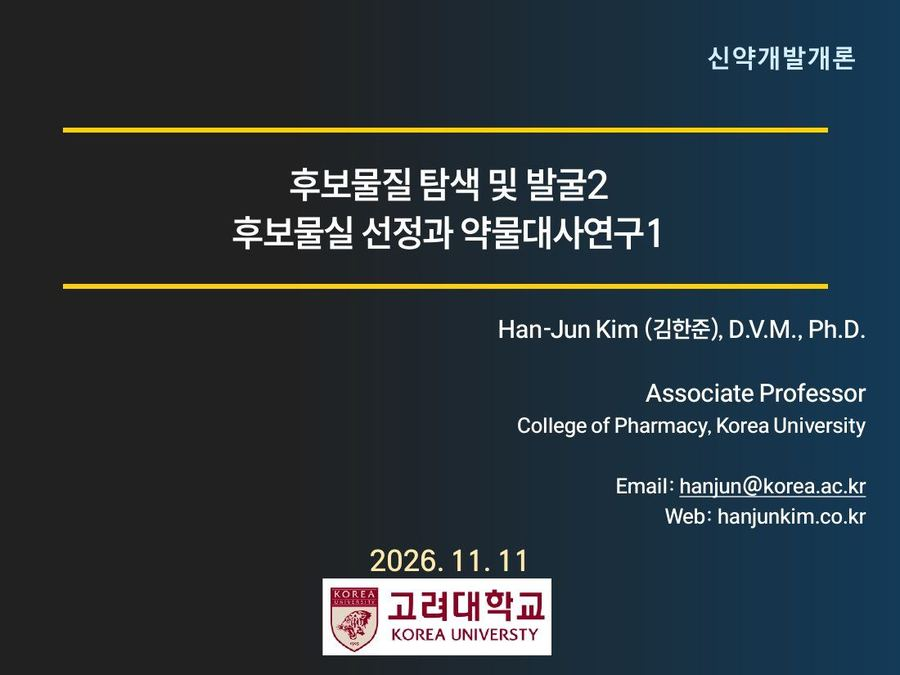
앞부분은 지난 시간 질문 Q&A 5개와 Chapter 3-2 복습(6주차와 같은 슬라이드), 본론은 새 단원 Chapter 4. 후보물질 선정과 약물대사 연구 — PD(역가·효능)와 PK(ADME)야.
“Questions?”(25·66)·영상 슬라이드는 빼거나 묶었어.
| 파트 | 슬라이드 | 이 노트 |
|---|---|---|
| Q&A (Hit·Lead 질문 5개) | 2~6 | 2~6쪽 |
| Chapter 3-2 복습 (6주차와 동일) | 7~24 | 7~23쪽 |
| 지난 시간 요약 | 8 | 8쪽 |
| Ch.4 후보물질 선정 | 26~33 | 24~30쪽 |
| PD — Emax·EC50·역가·효능 | 34~43 | 31~37쪽 |
| PK — 흡수·분포·대사·배설 | 44~62 | 38~51쪽 |
| ADME 개인차 · PK/PD 모델링 | 63~65 | 52~53쪽 |
지난 시간과 연결: Lead 최적화의 “IC50만 좋으면 끝이 아니다”의 이유 —
기말PD 용어 쌍(Potency/Efficacy, EC50/Emax)과 PK 정의(생체이용률·1차 통과)가 1순위.
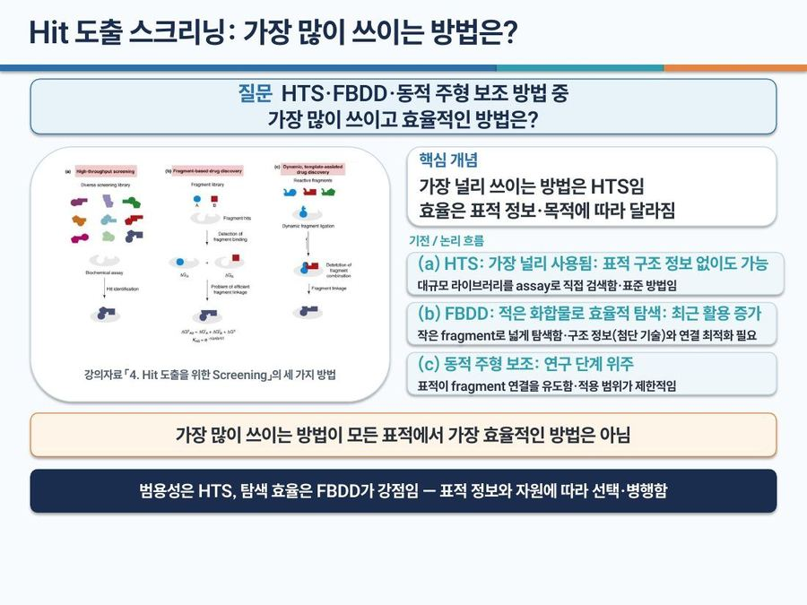
가장 널리 쓰이는 건 HTS, 적은 화합물로 효율적으로 탐색하는 건 FBDD. “가장 많이 쓰임 = 모든 표적에서 가장 효율적”은 아니라서, 표적 정보·자원에 따라 고르거나 병행해.
질문 HTS·FBDD·동적 주형 보조 방법 중 가장 많이 쓰이고 효율적인 방법은?
핵심 개념 가장 널리 쓰이는 방법은 HTS임 · 효율은 표적 정보·목적에 따라 달라짐
| HTS | FBDD | 동적 주형 보조 | |
|---|---|---|---|
| 넣는 것 | 완성 화합물 수십만~수백만 | 작은 조각 수백~수천 | 연결기 단 조각 |
| 표적 구조 정보 | 없어도 됨 | 필요(구조 기반) | 필요 |
| 위치 | 표준·범용 | 최근 증가 | 연구 단계 |
시험 포인트“가장 많이 쓰이는 방법 = HTS”는 맞지만,
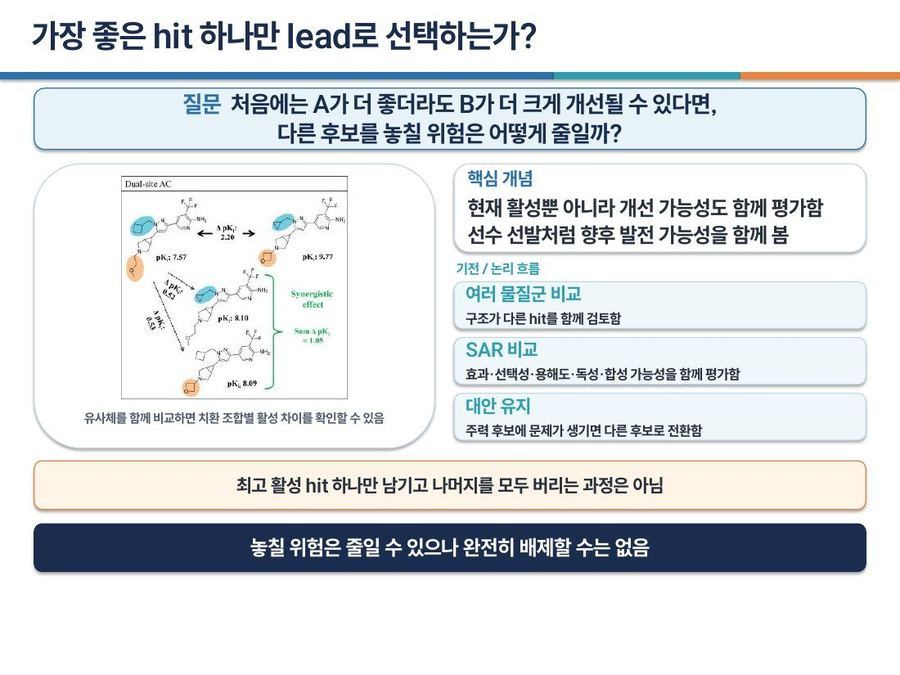
최고 활성 하나만 남기는 게 아니야. 현재 활성뿐 아니라 개선 가능성까지 보고, 구조가 다른 hit 여러 군을 함께 끌고 가서 주력 후보가 막히면 다른 후보로 전환해.
질문 처음엔 A가 더 좋더라도 B가 더 크게 개선될 수 있다면, 다른 후보를 놓칠 위험은 어떻게 줄일까?
핵심 개념 현재 활성뿐 아니라 개선 가능성도 함께 평가함 (선수 선발처럼 발전 가능성을 봄)
그림(Dual-site AC): 두 자리를 함께 바꾸면 각 변화의 pKi 효과가 더해져 상승효과(synergistic)가 나. 유사체를 함께 비교해야 치환 조합별 활성 차이가 보여.
6주차에 본 Lead 단계 “구조가 다양한 Hit 3~5종 확보”와 같은 이야기야 — 한 계열만 밀다 막히면 되돌아올 길이 없어.
시험 포인트
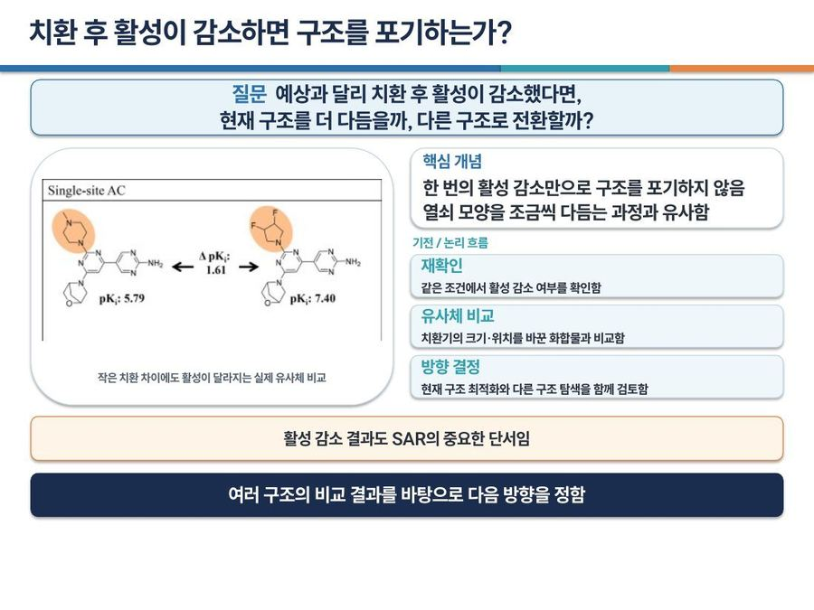
한 번 활성이 떨어졌다고 골격을 버리지 않아. 같은 조건에서 재확인하고, 치환기 크기·위치를 바꾼 유사체와 비교해 방향을 정해 — 활성 감소 결과도 SAR의 중요한 단서야.
질문 예상과 달리 치환 후 활성이 감소했다면, 현재 구조를 더 다듬을까 다른 구조로 전환할까?
핵심 개념 한 번의 활성 감소만으로 구조를 포기하지 않음 (열쇠 모양을 조금씩 다듬는 과정과 유사)
그림(Single-site AC): 한 자리만 살짝 바꿔도 pKi가 5.79 → 7.40처럼 크게 달라져(ΔpKi 1.61).
그래서 “활성이 떨어졌다”는 결과도 버리는 게 아니라 어느 부분이 결합에 중요한지 알려주는 정보로 써.
시험 포인트
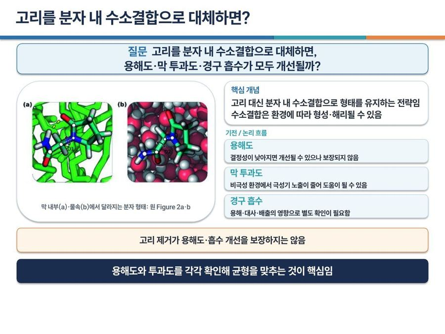
고리 대신 분자 내 수소결합으로 형태를 유지하는 전략이야. 용해도·막 투과도에 도움이 될 수 있지만 보장은 안 돼 — 용해도와 투과도를 각각 확인해 균형을 맞추는 게 핵심.
질문 고리를 분자 내 수소결합으로 대체하면 용해도·막 투과도·경구 흡수가 모두 개선될까?
핵심 개념 고리 대신 분자 내 수소결합으로 형태를 유지하는 전략 · 수소결합은 환경에 따라 형성·해리됨
그림(Figure 2a·b): 같은 분자라도 막 내부(비극성, a)에서는 수소결합으로 접혀 극성기를 숨기고, 물속(b)에서는 펴져 극성기를 드러내 — 환경에 따라 형태를 바꾸는 “카멜레온” 전략.
막을 통과할 땐 극성을 숨기고(투과 ↑), 물에 녹을 땐 극성을 드러내(용해 ↑) 양쪽을 노리지만, 둘 다 자동으로 좋아지진 않아.
시험 포인트
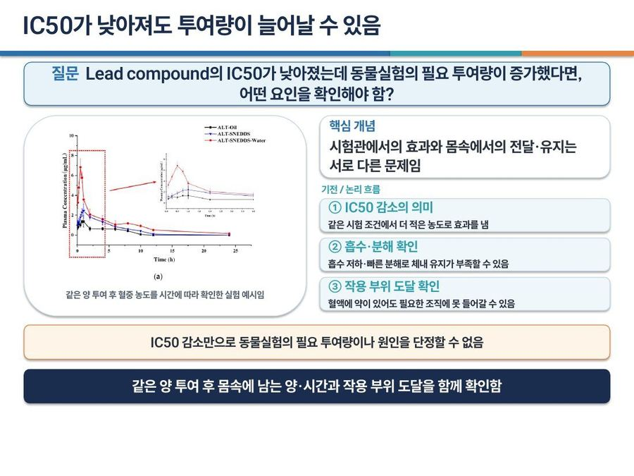
시험관 효과(IC50)와 몸속 전달·유지는 다른 문제야. IC50가 낮아졌는데 동물 필요 투여량이 늘었다면 흡수 저하·빠른 분해·작용 부위 미도달을 확인해야 해.
질문 Lead의 IC50가 낮아졌는데 동물실험 필요 투여량이 증가했다면 어떤 요인을 확인해야 함?
핵심 개념 시험관에서의 효과와 몸속에서의 전달·유지는 서로 다른 문제임
그래프: 같은 양을 투여해도 제형(Oil, SNEDDS 등)에 따라 혈중 농도 곡선이 달라져 — 흡수·유지가 제형에 좌우된다는 실험 예시.
시험 포인트
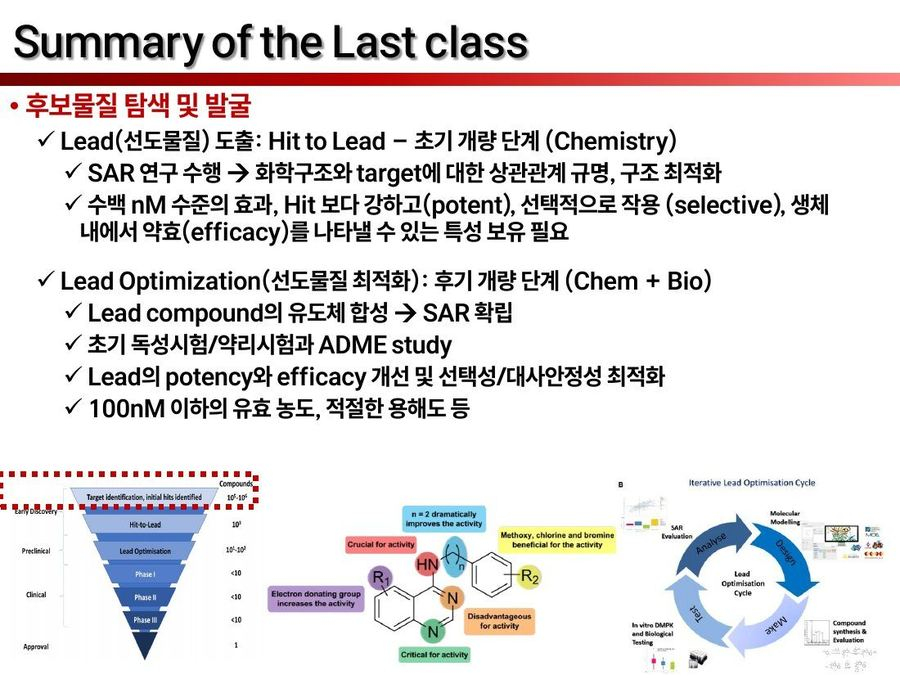
지난 시간 Lead 단계를 한 장으로 정리한 슬라이드. Hit→Lead(초기, 화학 중심)는 SAR로 수백 nM까지, Lead 최적화(후기, 화학+생물)는 ADME·독성까지 봐서 100 nM 이하로.
Lead 도출 (Hit to Lead) — 초기 개량 단계 (Chemistry)
Lead Optimization (선도물질 최적화) — 후기 개량 단계 (Chem + Bio)
농도 사다리를 다시 떠올려: Hit μM → Lead 수백 nM → Candidate ≤100 nM. 뒤로 갈수록 화학(구조)만이 아니라
이번 시간은 여기서 한 칸 더 — Lead 최적화와 후보물질(Candidate) 선정에서 핵심이 되는 약물대사·PK/PD를 본격적으로 다뤄.
연결“왜 Lead 최적화에 ADME가 들어오나?” → 시험관 효능(화학)만으로는 몸속에서 듣는지 알 수 없어서. 그 답이 Chapter 4.
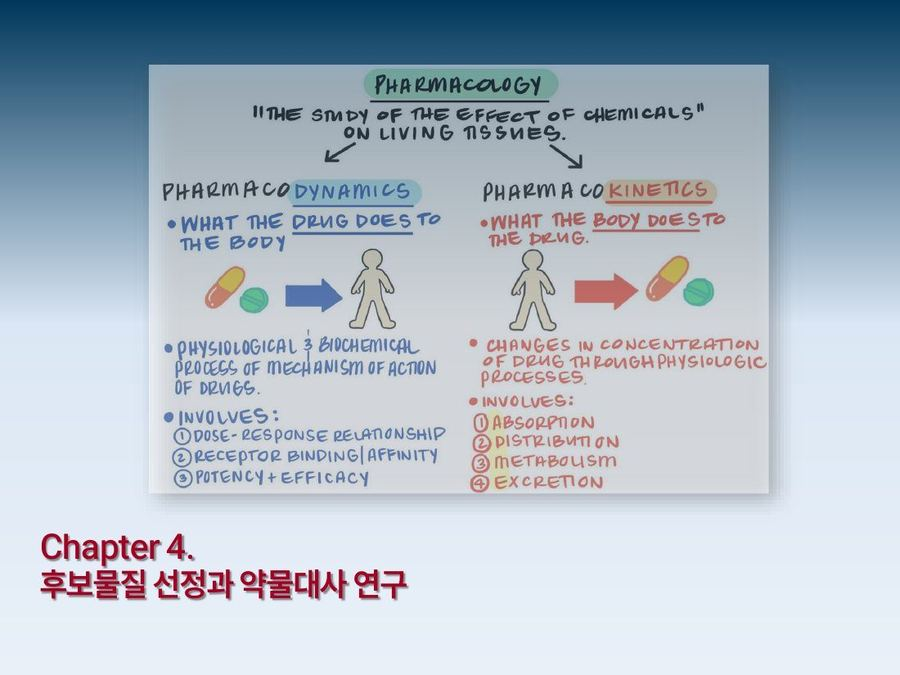
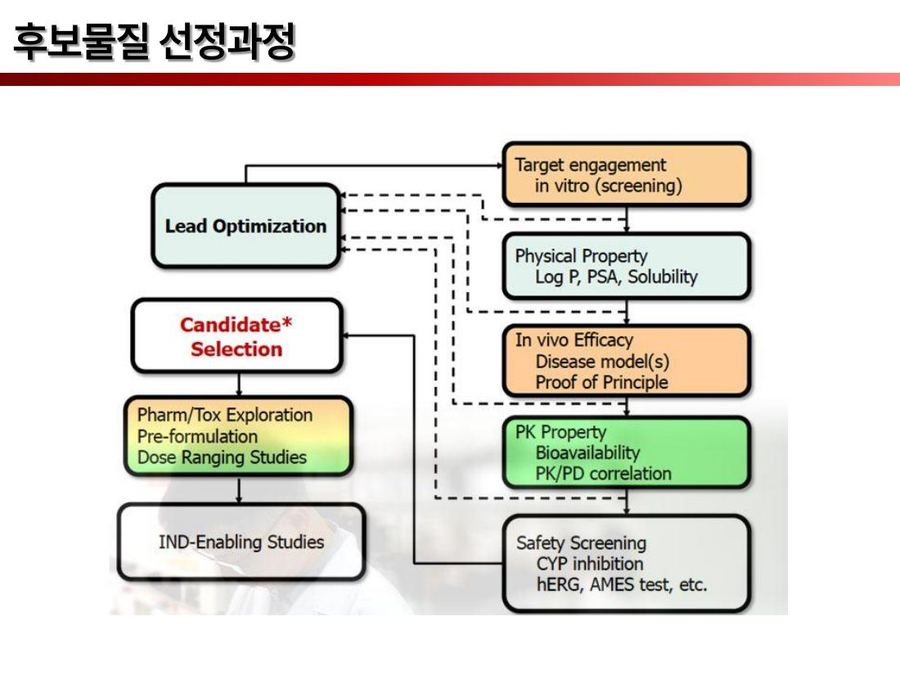
새 단원 표지와 개요 슬라이드들. 질문은 “무엇이 약을 잘 듣게 하나(What makes a drug work well?)” — Hit을 Drug-like한 후보물질(Candidate)로 만드는 과정에서 약물대사 연구가 핵심이야.
26 Chapter 4. 후보물질 선정과 약물대사 연구 (표지)
27 What makes a drug work well? (영상) — 약이 잘 듣는 조건을 묻는 도입
28 Hit to Drug Candidate (Drug-like compound): Hit→Lead→Lead optimization→Preclinical Candidate→IND. 각 단계 6~15개월.
29 후보물질 선정과정: Lead Optimization과 Candidate Selection을 중심으로 물성·효능·PK·안전성을 반복 평가 → IND-Enabling Studies
30 후보물질 선정 및 약물대사 연구: 큰 신약개발 지도에서 Lead 최적화~후보물질 도출 구간(빨간 점선)이 이번 범위
후보물질 선정과정(29)의 반복 평가 항목:
기말이 단원의 질문 =
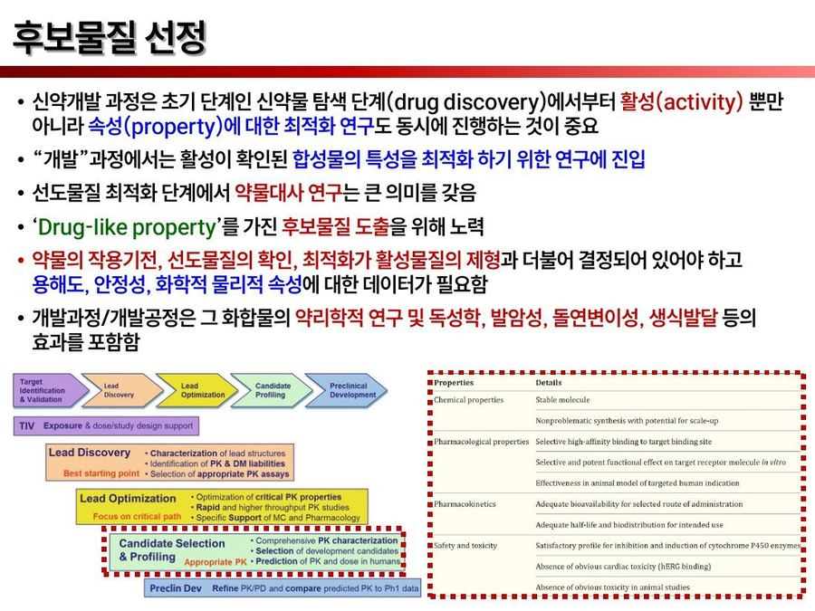
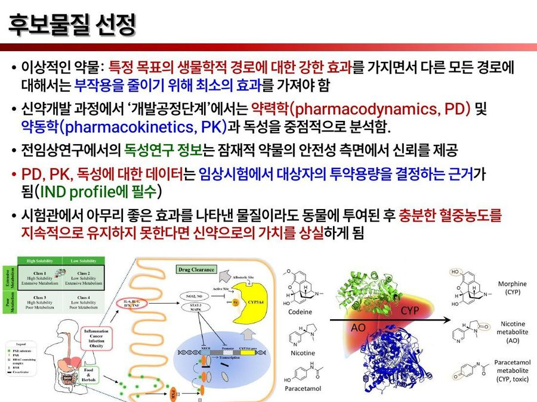
신약개발은 초기부터 활성(activity)뿐 아니라 속성(property)도 함께 최적화해야 해. 이상적 약물 = 표적엔 강하게, 다른 경로엔 최소로. 개발공정에선 PD·PK·독성을 집중 분석하고, 이 데이터가 임상 용량의 근거(IND)가 돼.
31 후보물질 선정
32 이상적 약물 = 표적 경로엔 강한 효과, 다른 경로엔 부작용 줄이도록 최소 효과. 개발공정단계에선 PD·PK·독성 집중 분석.
왜 속성(property)이 활성만큼 중요한가 (32):
시험 포인트후보물질 = 활성 × 속성. “in vitro 효능만 좋으면 된다”는 틀린 보기. PD/PK/독성은 임상 용량 결정·IND의 근거.
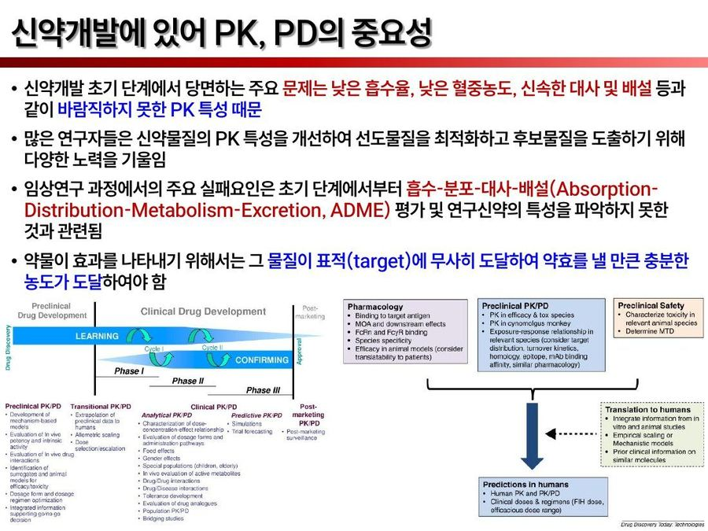
신약 초기의 주요 문제는 낮은 흡수·낮은 혈중농도·빠른 대사·배설 같은 나쁜 PK야. 임상 실패의 주요 원인도 초기부터 ADME를 파악 못한 것. 약은 표적에 충분한 농도로 도달해야 효과를 내.
ADME = Absorption(흡수)·Distribution(분포)·Metabolism(대사)·Excretion(배설). PK는 이 네 과정으로 “몸이 약에게 하는 일”을 다뤄.
그림: 전임상~임상(Learning→Confirming)에서 PK/PD가 계속 연결돼. 동물 데이터를 사람으로 번역(allometric scaling 등)해 사람 초회 용량(FIH dose)을 예측.
시험 포인트
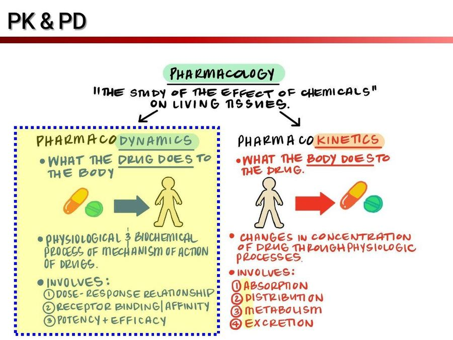
PD(약력학) = 약이 몸에게 하는 일(용량-반응·수용체). PK(약동학) = 몸이 약에게 하는 일(ADME). PD의 용량-반응 곡선은 로그 스케일의 S자형이고, 핵심 파라미터는 Emax·EC50·TD50·LD50.
34 PK & PD (손그림): Pharmacology = 화학물질이 생체 조직에 미치는 영향 연구
| PD (약력학) | PK (약동학) |
|---|---|
| 약이 몸에게 하는 일 | 몸이 약에게 하는 일 |
| 용량-반응·수용체 결합·역가·효능 | 흡수·분포·대사·배설(ADME) |
35·36 신약개발에서 PD: 용량-반응 효과 연구, 치료효과·이상반응에 관심. 용량-효과 관계 = 로그 스케일의 S자형 용량-반응 곡선.
용량-반응 곡선 주요 Parameter (36):
| 기호 | 뜻 |
|---|---|
| Emax | 약이 낼 수 있는 최대 효과 |
| EC50 | 최대 효과의 50%에 달하는 용량 |
| TD50 | 집단 절반에서 독성을 일으키는 용량 |
| LD50 | 집단 절반에서 사망을 일으키는 용량 |
일반적으로
기말EC50/TD50/LD50 정의 구분 + “고용량일수록 치료효과도 비례 증가”는 틀린 보기(부작용만 증가).
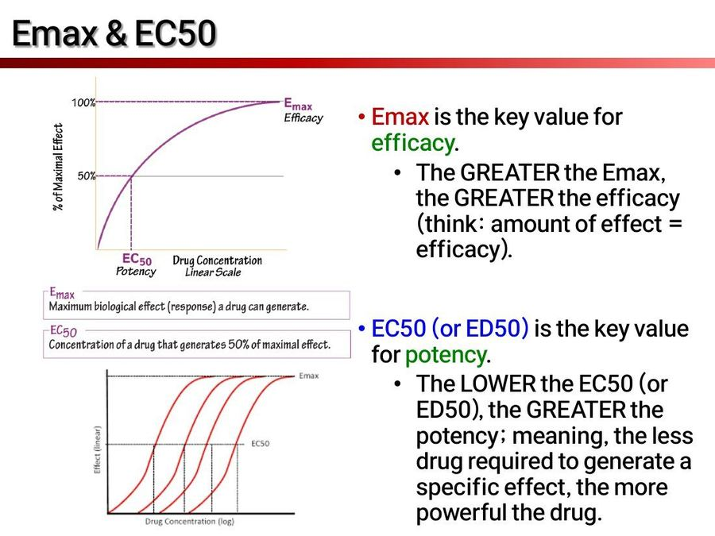
Emax는 효능(efficacy)의 지표 — 클수록 효능이 큼(효과의 ‘양’). EC50(또는 ED50)은 역가(potency)의 지표 — 낮을수록 역가가 큼(적은 양으로 같은 효과 = 더 강력).
37은 Emax 그래프만 있는 도입 슬라이드.
| Emax | EC50 | |
|---|---|---|
| 나타내는 것 | 효능 (efficacy) | 역가 (potency) |
| 그래프 위치 | 곡선의 높이(천장) | 50% 지점의 가로 위치 |
| 좋은 약 | Emax 클수록 ↑ | EC50 낮을수록 ↑ |
헷갈림 주의:
기말
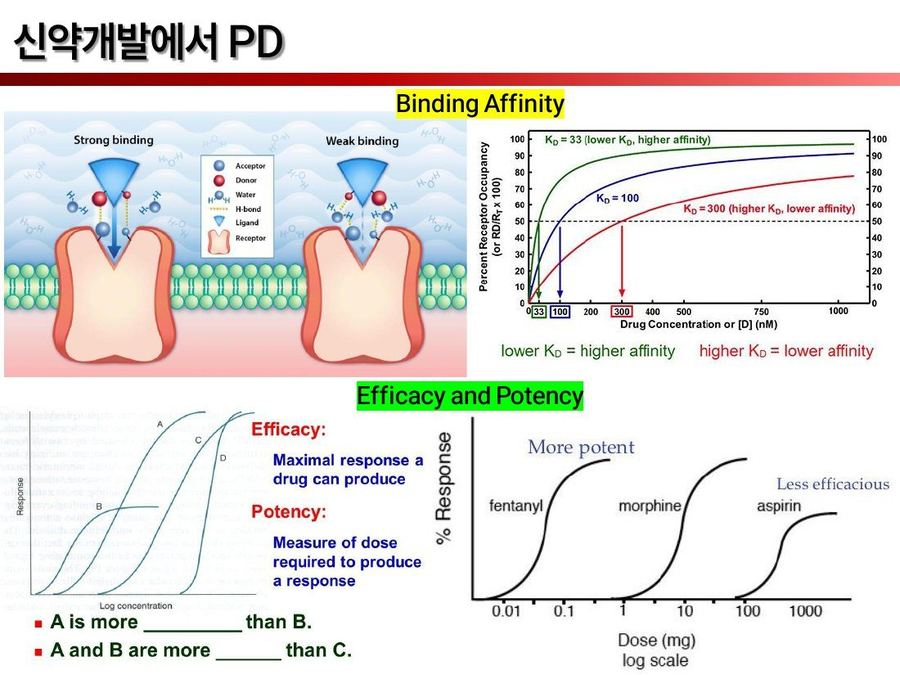
수용체 결합력(affinity)은 Kd가 낮을수록 높아. 그래프에서 곡선이 왼쪽에 있을수록 역가(potent)↑, 천장이 높을수록 효능(efficacious)↑. 둘은 별개의 축이야.
Binding Affinity (결합 친화도)
Efficacy and Potency: Efficacy = 약이 낼 수 있는 최대 반응 / Potency = 반응을 내는 데 필요한 용량
빈칸: A is more potent than B · A and B are more efficacious than C.
그래프 읽는 법 — 축이 두 개라고 생각해:
결합력(Kd 낮음)이 좋으면 대개 역가가 높아지지만,
기말“A is more ___ than B / A·B are more ___ than C” 빈칸 =
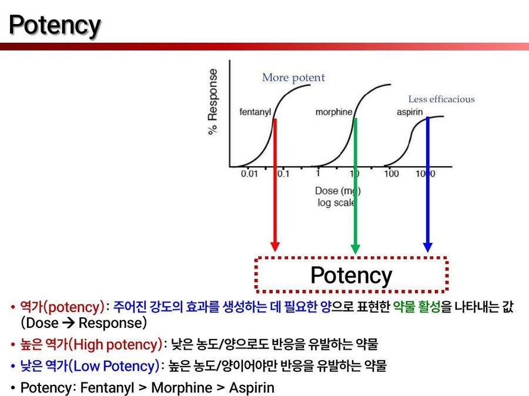
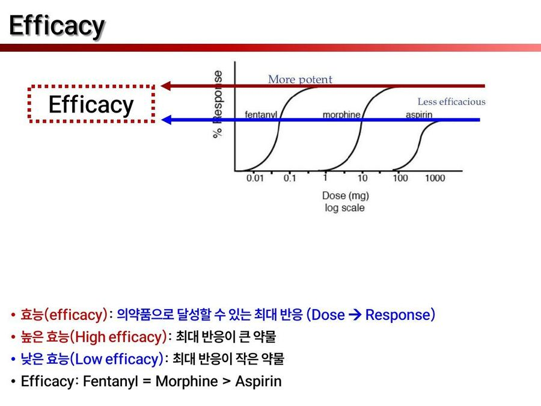
역가(potency) = 같은 효과를 내는 데 필요한 양(적을수록 고역가). 효능(efficacy) = 낼 수 있는 최대 반응. 역가는 펜타닐>모르핀>아스피린, 효능은 펜타닐=모르핀>아스피린.
40 역가 (Potency): 주어진 강도의 효과를 내는 데 필요한 양 (Dose→Response)
41 효능 (Efficacy): 약으로 달성할 수 있는 최대 반응 (Dose→Response)
세 약으로 외우기 — 같은 진통제라도:
| 역가(가로 위치) | 효능(천장) | |
|---|---|---|
| Fentanyl | 가장 높음(곡선 맨 왼쪽) | 높음 |
| Morphine | 중간 | 펜타닐과 같은 수준 |
| Aspirin | 낮음(곡선 맨 오른쪽) | 낮음 |
기말이 순서(역가 F>M>A, 효능 F=M>A)는 단답·객관식 단골. 역가=필요 용량, 효능=최대 반응.
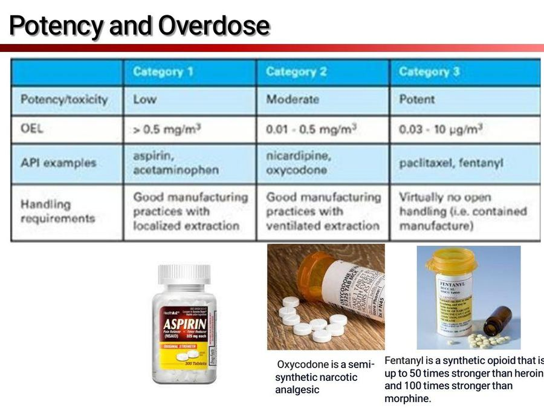
역가가 높을수록 아주 적은 양으로도 위험해서 취급 기준(OEL)이 엄격해져. 고역가 물질은 밀폐 제조 등 노출을 극도로 제한해 — 역가는 약효 지표이자 안전·취급의 기준이기도 해.
42 Potency and Overdose: 취급 등급 표 (Potency/toxicity에 따라)
| 등급 | OEL | 예시 | 취급 |
|---|---|---|---|
| 1 (Low) | >0.5 mg/m³ | 아스피린·아세트아미노펜 | 국소 추출 |
| 2 (Moderate) | 0.01~0.5 | 니카르디핀·옥시코돈 | 환기 추출 |
| 3 (Potent) | 0.03~10 µg/m³ | 파클리탁셀·펜타닐 | 밀폐 제조 |
43 Overdose: 합성 오피오이드 관련 공중보건 통계 — 고역가 물질의 안전역 중요성 사례
역가가 높다는 건
그래서 고역가 API일수록 OEL(작업장 노출 한계)이 µg/m³ 수준으로 낮고, 제조 시 개방 취급을 피해(밀폐).
연결36쪽 TD50·LD50와 묶어서: 역가가 높을수록
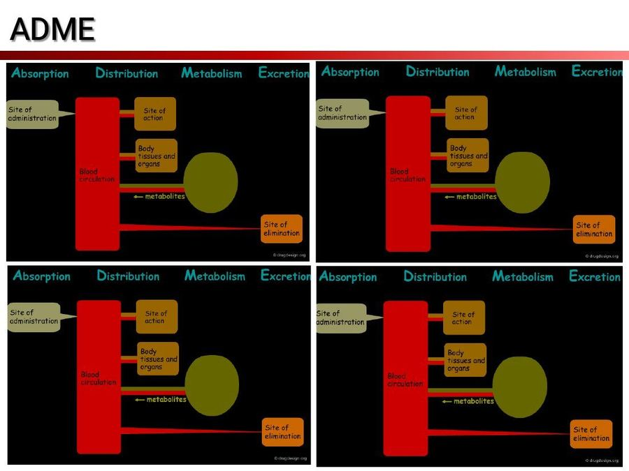
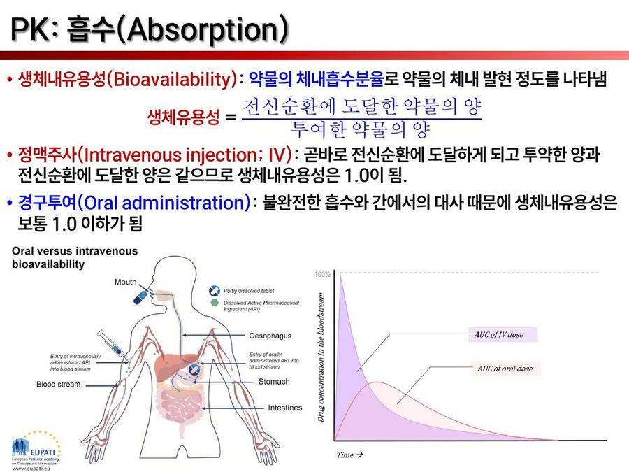
PK의 첫 글자 A(흡수). 흡수 = 약이 피부·장·점막에서 얼마나 흡수되나. 생체이용률(F) = 전신순환 도달량/투여량. 정맥주사는 F=1.0, 경구는 불완전 흡수+간 대사로 보통 F<1.0.
44 PK & PD / 45 ADME: A·D·M·E 네 과정 개요 (투여부위→혈액순환→작용/배설)
46 흡수(Absorption): 약물이 피부·장·구강점막에 얼마나 흡수되는가. 전신순환에 도달한 약물은 작용부위에 작용 가능.
50 생체내유용성(Bioavailability) = 체내흡수분율
F = 전신순환 도달 약물량 / 투여 약물량
경구 생체이용률이 깎이는 3단계 (51쪽 그림, Dissolved→Absorbed→Portal vein):
생체이용률은 투여경로·약의 화학적 형태·소화기관 효소·간 대사에 좌우돼(51).
기말
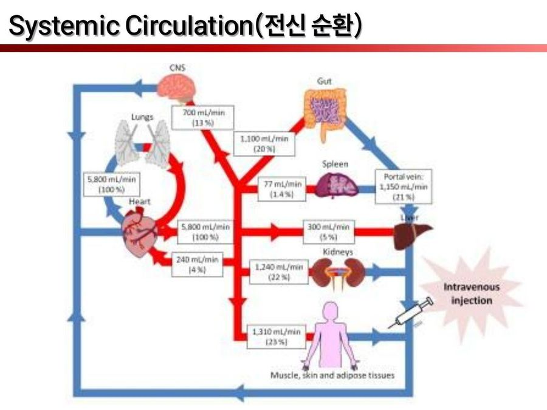
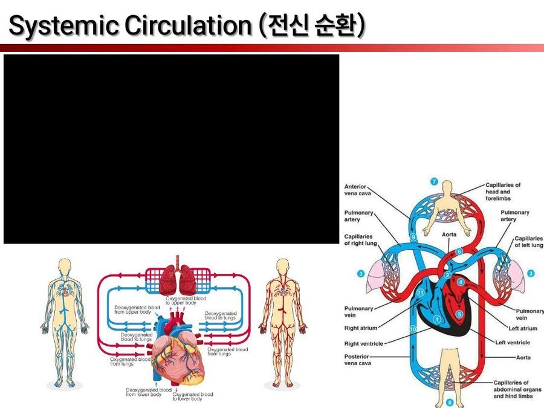
흡수된 약이 퍼지는 통로인 전신순환을 보는 슬라이드. 심박출량이 장기별로 나뉘고(간·신장·근육 등), 경구약은 장→간문맥→간을 먼저 거쳐(1차 통과), IV는 이를 건너뛰어 곧장 순환으로 들어가.
48·49는 전신순환 모식도 — 흡수(A)와 분포(D)를 잇는 그림이야.
이 그림이 중요한 이유:
장기마다 받는 혈류량이 달라서(분포의 전제), 혈류가 많은 장기엔 약이 빨리·많이 가고 적은 장기엔 더디게 가.
연결IV가 F=1.0인 이유 = 간문맥(1차 통과)을 건너뛰기 때문. 다음 장 분포(D)로 이어짐.
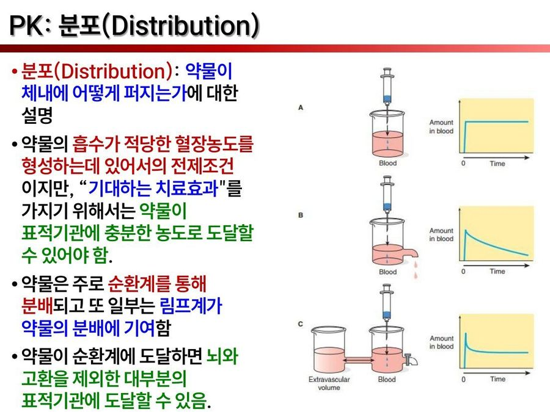
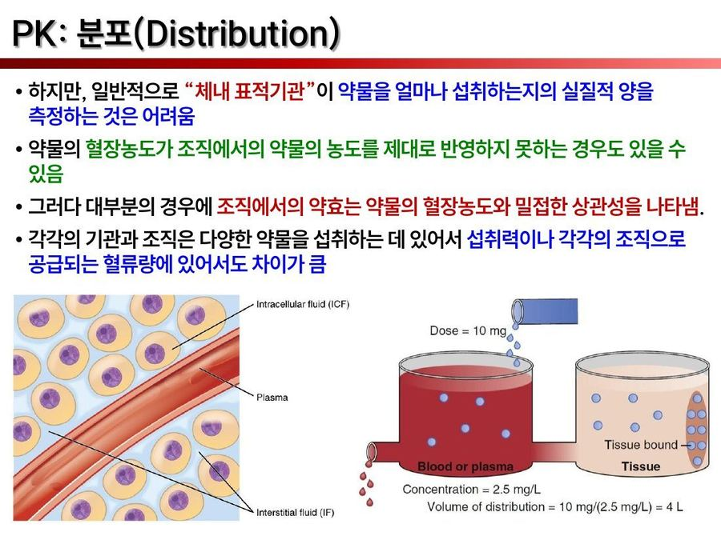
D(분포) = 약이 체내에 어떻게 퍼지나. 흡수로 혈장농도가 생겨도 표적기관에 충분한 농도로 도달해야 치료효과가 나. 약은 순환계로 분배되며, 뇌·고환을 뺀 대부분 장기에 도달해.
뇌·고환이 예외인 이유: 혈액-뇌 장벽(BBB)·혈액-고환 장벽 같은 보호 장벽이 약 통과를 막아 — CNS 약 개발이 어려운 이유.
분포용적(Vd) 개념(56쪽 그림): Vd = 약물량/혈장농도. 예) 10 mg을 넣었더니 혈장농도 2.5 mg/L → Vd = 4 L. Vd가 크면 조직으로 많이 빠진 것.
시험 포인트
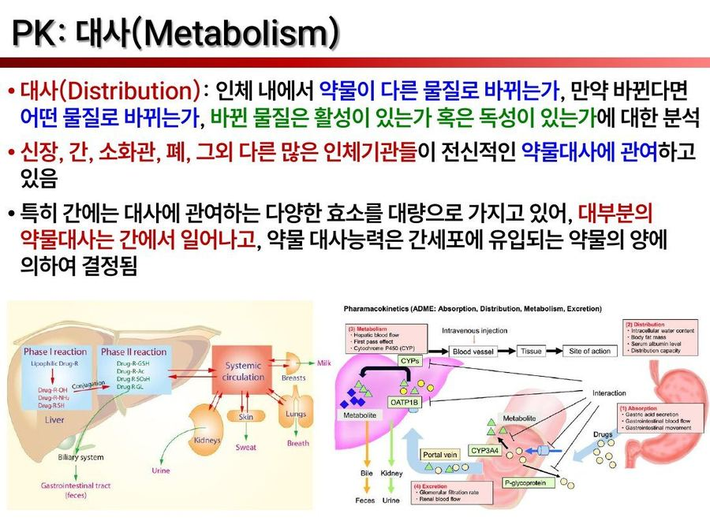
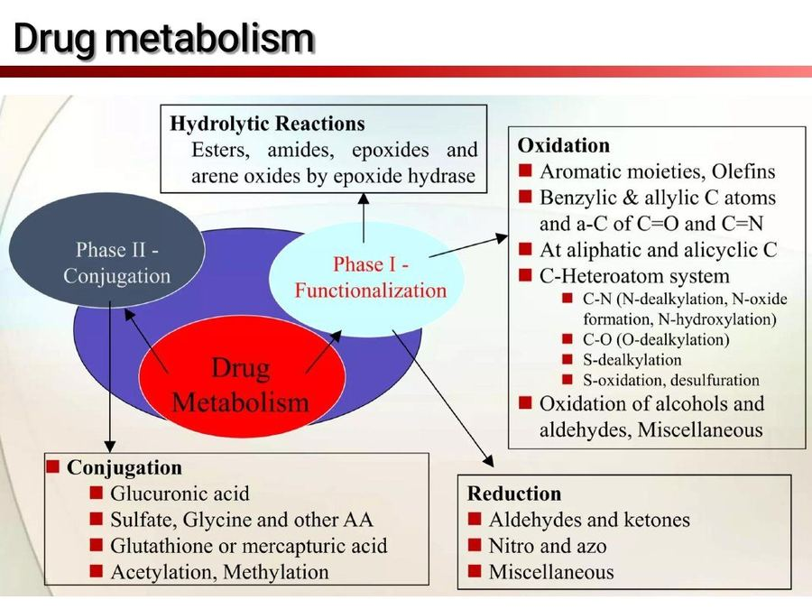
M(대사) = 약이 다른 물질로 바뀌나, 바뀐 게 활성·독성이 있나. 대부분 간에서 일어나. Phase I(작용기화, CYP450: 산화·환원·가수분해)로 극성기를 붙이고, Phase II(포합)로 수용성기를 붙여 배설을 도와.
Phase I (작용기화): CYP450로 산화·환원·가수분해 → OH·COOH 등 극성기 도입 (예: 아스피린 가수분해)
Phase II (포합, conjugation): 글루쿠론산·황산·글리신·글루타티온·아세틸·메틸기 등을 붙여 수용성 ↑
Phase I vs II (60쪽 그림):
| Phase I | Phase II | |
|---|---|---|
| 하는 일 | 작용기화(functionalization) | 포합(conjugation) |
| 반응 | 산화·환원·가수분해 | 글루쿠론산·황산·GSH·아세틸·메틸 |
| 효소 | CYP450 중심 | 전이효소(UDP-GT 등) |
| 결과 | 극성기 도입(활성·독성대사체 가능) | 수용성 ↑ → 배설 쉬움 |
기말
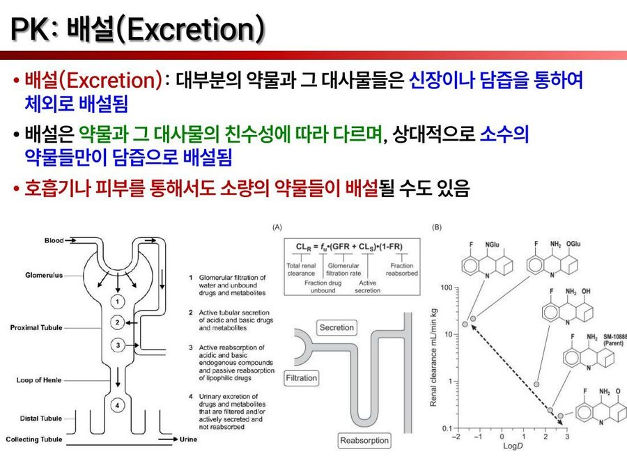
E(배설) = 약과 대사물을 체외로 내보내기. 대부분 신장(소변)·담즙으로 나가고, 소수만 담즙으로. 배설은 친수성(수용성)에 좌우돼(그래서 Phase II로 수용성을 높임). 호흡기·피부로도 소량.
61 그림: 신장 네프론에서 ① 사구체 여과 ② 세뇨관 분비 ③ 재흡수 ④ 소변 배설. 신장 청소율 공식과 LogD-청소율 관계도 제시.
왜 대사 뒤에 배설인가: 지용성 약은 신장에서 재흡수돼 잘 안 나가 → Phase I·II로
신장 청소율 CLR = fu·(GFR + CLS)·(1−FR): 여과 + 분비 − 재흡수. LogD가 높을수록(지용성) 신장 청소율이 낮아지는 경향.
시험 포인트
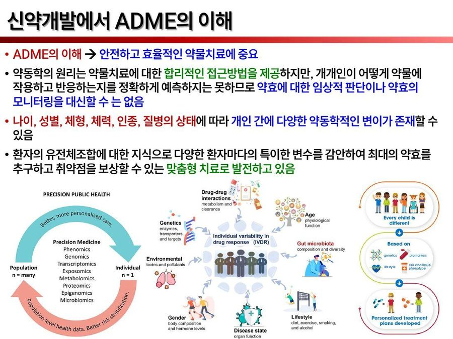
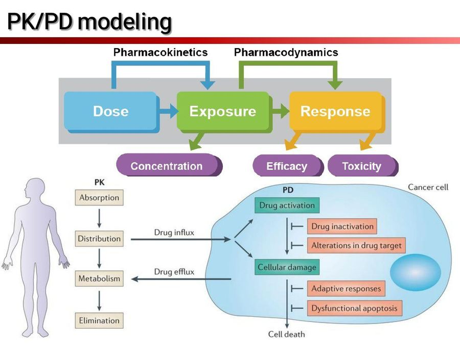
단원 마무리. ADME 이해 = 안전·효율적 약물치료의 핵심. 다만 PK 원리가 개인 반응을 완벽히 예측하진 못해(나이·성별·인종·질병). 유전체 기반 맞춤형 치료로 발전 중. PK/PD 모델 = Dose→Exposure→Response.
64·65 PK/PD modeling: Dose → Exposure(농도) → Response(효능·독성)로 잇는 모델. PK(ADME)가 농도를, PD가 반응을 설명.
전체 그림 한 장 정리 (65 ABCD):
기말